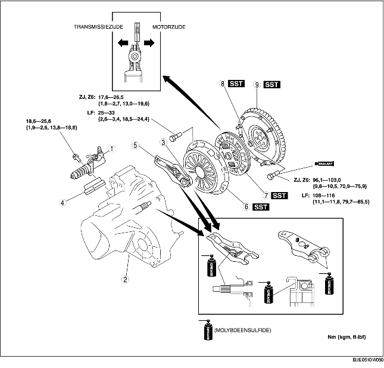

1. Verwijder de onderdelen in de aangegeven volgorde, zie de tabel.
2. Plaats de onderdelen in omgekeerde volgorde.

.
|
1
|
Koppelingswerkcilinder
|
|
2
|
Handgeschakelde transmissie
|
|
3
|
Druklager
(Zie CONTROLE DRUKLAGER.)
|
|
4
|
Stofhoes
|
|
5
|
Koppelingsvork
|
|
6
|
Drukgroep
|
|
7
|
Koppelingsplaat
|
|
8
|
Toplager
|
|
9
|
Vliegwiel
|
1. Verwijder de ondersteuning van de gaffel alvorens de koppelingsgaffel te demonteren.
1. Plaats de SST's.
2. Draai de bouten één slag per keer kruislings los tot de veer niet meer onder spanning staat.
3. Verwijder de drukgroep en de koppelingsplaat.
1. Verwijder het toplager met SST.
1. Plaats het toplager met de SST's.
ZJ, Z6
LF
1. Houd het vliegwiel tegen met SST.
2. Verwijder de bouten stapsgewijs en kruiselings.
3. Verwijder het vliegwiel.
4. Controleer na het verwijderen van het vliegwiel of de achterste krukaskeerring niet lekt.
1. Plaats het vliegwiel op de krukas.
2. Reinig de schroefdraad en breng borgmiddel aan als de bouten opnieuw gebruikt worden.
3. Draai de bouten van het vliegwiel handvast.
4. Plaats SST op het vligwiel.
5. Draai de vliegwielbouten stapsgewijs en kruiselings vast.
1. Houd de koppelingsplaat in de juiste positie vast met SST.
1. Plaats de SST's.
2. Draai de bouten stapsgewijs en kruislings vast.